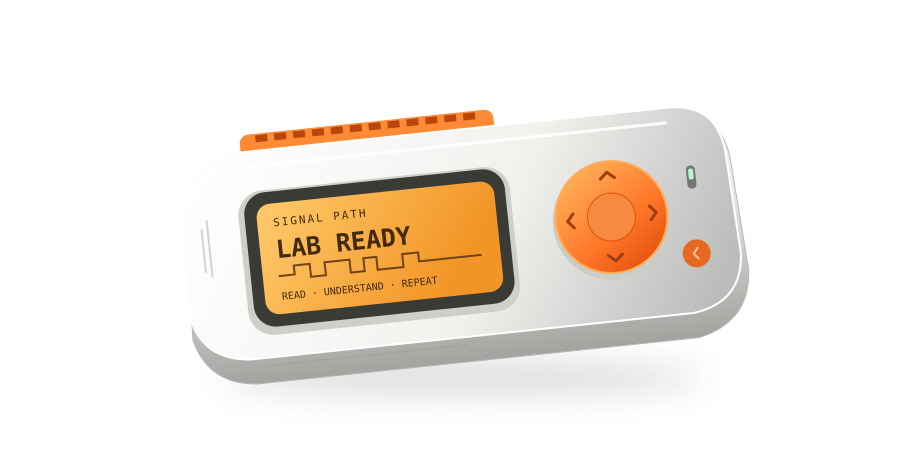

The Flipper Zero course. From first principles.
See the signal.
Understand the system.
A pocket-sized device. A whole world to understand.
Build real
skills in radio, hardware and security, one experiment at a time.


Official body model, rendered in your browser. Explore Sub-GHz →
Knowledge you can use
Go beyond the button.
Know what happened. Understand why. Then do it again.
Make the invisible
visible.
Watch bits become waves. See why a replay succeeds—or fails.
A theory.
Then a test.
Make a prediction. Change one thing. Keep the evidence.
From using it
to creating it.
Read a circuit. Compile an app. Explain the system yourself.
New · Module 18
Small board.
New possibilities.
Meet the official Wi-Fi Devboard. Debug your code, explore 2.4 GHz networks, and understand what different firmwares can do.
Explore the Wi-Fi moduleBlack Magic · Marauder · captive portals · ESP-IDF
ESP32-S2 / 2.4 GHz
The complete course
Every skill.
A step forward.
Start at zero. Follow the twelve-week core path, or return to the topic you need. Add Wi-Fi when you have the board.
Meet your radio lab
Navigate the Flipper, record your firmware, and watch live radio energy for the first time.
Find the frequency
Turn "frequency" into a real number you read off the screen for a remote in your hand.
Hear the signal: AM vs FM
Choose the modulation yourself and watch a signal appear or vanish.
Decode a real protocol
Capture a fixed-code remote, name its protocol, and save your first .sub file.
Your first legal replay
Cross from listening to transmitting — to your own device, in your own space.
Raw signals & rolling codes
Capture what the Flipper can't name, and learn why a copied gate remote works once, then dies.
125 kHz RFID
Read, save and emulate a training tag — and learn why it's not "radio" the way Sub-GHz is.
NFC at 13.56 MHz
Contactless cards, tags and what the Flipper can and can't do with them.
Firmware, apps & Momentum
Make a documented firmware choice, keep backups, and distinguish stock features from fork additions.
Troubleshooting field guide
"Nothing decodes", "replay does nothing", "range is terrible" — a diagnostic flow for each.
Foundation project: your signal atlas
Build an evidence-based atlas of your training devices, then continue into other interfaces.
Infrared: build your own remote
A two-button remote with meaningful labels and observed results.
GPIO: signals you can touch
An annotated circuit diagram and estimated LED current.
USB and Bluetooth: understand trust
The exact text output, without executing any operating-system commands.
iButton and U2F: identity is not authentication
A supported training-key reading, or a documented unsupported result.
Build your first Flipper app
A successful build with recorded toolchain and firmware versions.
Authorized security research: test the claim
A threat model identifying access, capability, target, and security property.
Mastery project: explain, measure, teach
A repeatable experiment with a prediction, controlled variable, and recorded failures.
Wi-Fi Devboard & firmware
Debug, explore Wi-Fi, compare firmware and recover your official ESP32-S2 board.
Your progress & badges
Saved in this browser. Completion is self-reported. Back up your notebook and progress.
Stay curious. Work with care.
Understanding
is the real upgrade.
Learn the mechanisms. Test on authorized equipment. Build a body of work you can explain.